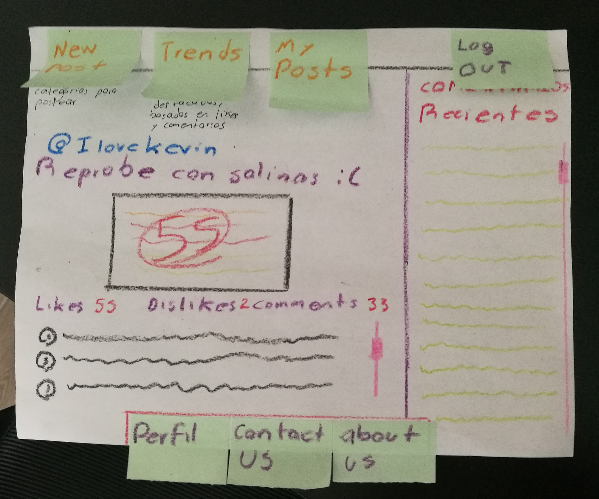

Persona
Modelado de nuestros usuarios
Nuestra aplicacion va dirigida a un grupo muy especifico de personas, por lo cual cual nos es muy facil identificarlos y definirlos.
Lo primero es que todos deben ser alumnos activos del tecnologico de monterrey campues guadalajara. El 53% de los alumnos, segun datos aportados por el tecnologico de monterrey, no son de la zona metropolitana de Guadalajara, lo cual nos permite contar con una base de usuarios altamente multicultural. La edad promedio es de 18 a 23 años de edad. Las nesecidades que hemos encontrado han sido la buqueda de una forma de poder expresarse y ser escuchados. Y estamos convencidos que la mejor manera es hacerlo es por medio de una aplicacion web que sea totalmente anonima.
Lo que nos motivo a llevar a cabo este proyecto es la busqueda de una comunidad tec donde todos esten conectados, y puedan expresarse sobre cualquier tema que les preocupe o le llame la atencion. Algo que nunca debemos hacer es que la cofidencialidad de nuestros usuarios se vea comprometida. Por lo tanto debemos centrar una gran cantidad de esfuerzos y recursos para evitar cualquier fuga de informaccion o ataque cibernetico.
Nuetros usuarios ya cuentan con el habito de estar siempre conectados a la diferentes redes sociales, por lo tanto la factibilidad del proyecto se ve muy impulsada por los habitos de nuestros usuarios. A esto hay que sumarle el hecho de que nuestros usuarios potenciales estan muy acostumbrados al uso de la tecnologia lo que permitiria el uso de la aplicacion de una manera aun mas fluida. Ademas el hecho de poder comunicarse con personas de su circulo social, en este caso el tec de monterrey campus gda, seria uno de los llamativos principales de nuestra aplicacion. Algo que le interesa a nuestros usuarios.
Descripcion y solucion del problema
Queremos poner en contacto a una comunidad en concreto La comunidad ITESM gda de manera que puedan expresarse de manera libre y anonima sabiendo que seran escuchado por toda la comunidad estudiantil y por los profesores, sin ser juzgados o tachados por algun motivo en especial. Y que mejor manera de hacerlo que por medio de una red solcial. Esta te pediria entrar con tu correo del tecnologico de monterrey para verificar que seas un estudiante de la universidad. Se enviaria un correo de verificacion a tu cooreo institucional y de esta manera ya serias parte de la nueva red social "exclusiva para estudantes" de la comunidad tec gda